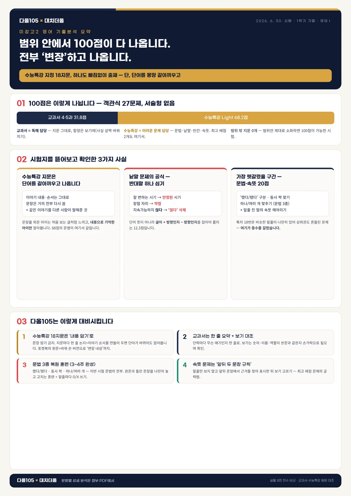
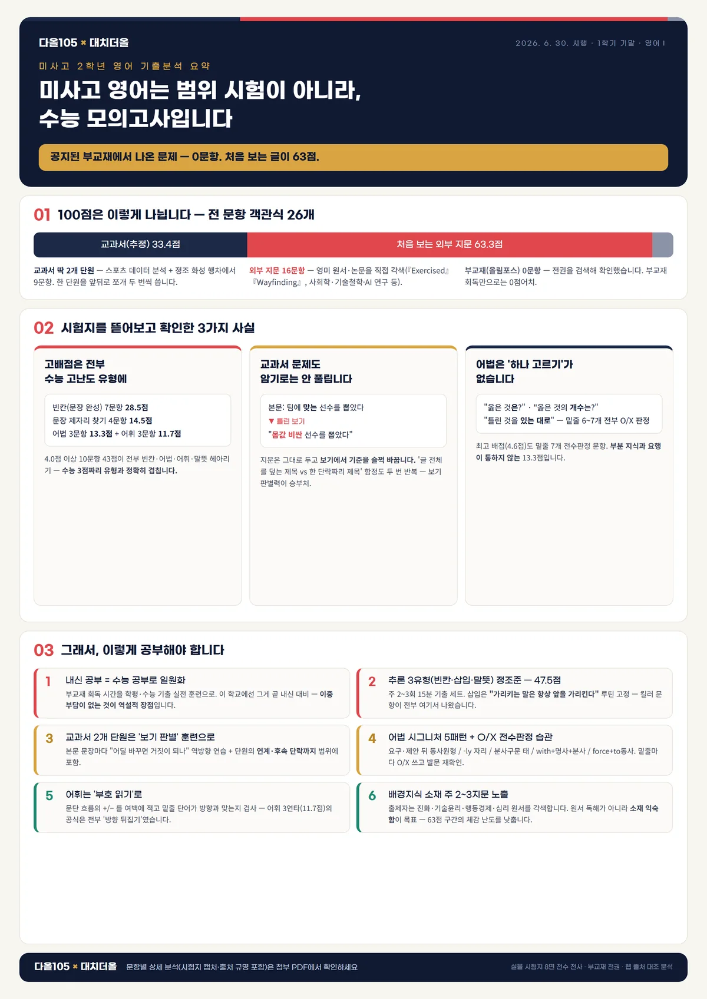

시험지를 문항 하나하나 뜯어서 출처·유형·배점까지 정리했습니다.
2학기 중간 준비 방향을 잡는 데 쓰시라고 만든 자료입니다.
학교마다 교과서도, 출제 방식도, 서술형 배점도 다릅니다. 그래서 학교별로 따로 분석했습니다.


위 자료는 지난 시험을 분석한 것입니다.
이번 2학기 중간은 — 시험 범위 전체를 분석하고,
그 학교 시험지와 문항 수·배점까지 똑같이 만든 동형 모의고사가 함께 나갑니다.
범위 전체 분석서 + 동형 8세트 이상 + 적중 워크북 + 전 문항 해설
자료 실물 보러 가기 →